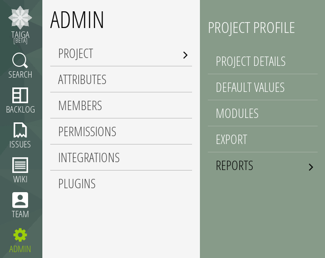
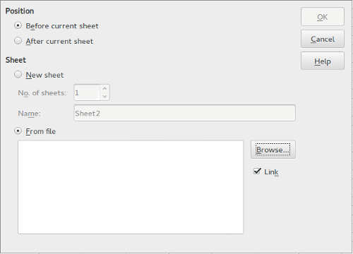

CSV Reports
In Taiga you can make reports with some data and graph about your projects. To do that you can use your favorite spreadsheet app and the information about your user stories, tasks and issues in csv (comma-separated values) format.
You can obtain the information like a csv file or like a csv data url, one for user stories, other for tasks and other for issues.
Get a csv file:
- Go to Admin > Project > Reports.
 - Click Generate URL link if url doesn't exist yet.

- Click Download CSV buttton to start the download of the csv file.
...in LibreOffice
- Use the "Download csv" button and get a local copy of the file
- Click Insert > Sheet from file
- Enable the link option and click browse for selecting the downloaded file

Use csv data url...
- Go to Admin > Project > Reports.
- Click Generate URL link if url doesn't exist yet.
- Copy the url (the icon on the right of the input is useful to select all text before press Ctrl+C).
...in Google Docs
- Create a new spreadsheet document.
- Use the function IMPORTDATA(
) with the generated URL and press ENTER.

- The information will appear automatically.

Remember that you can share the url and regenerate every time you want. And a very important thing: only the last generated url will be valid for each type.